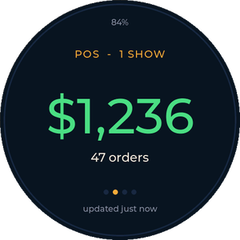
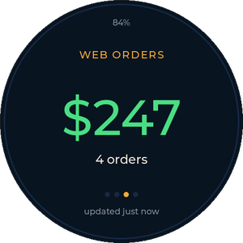
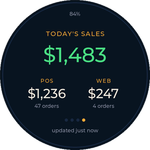
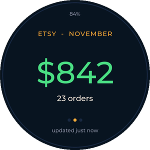
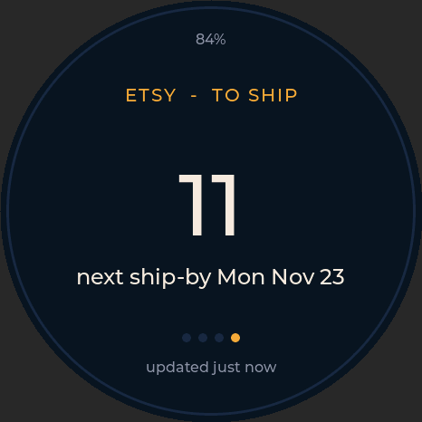
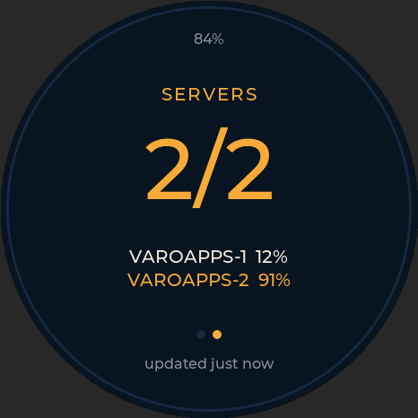

Sales Dial
Today's FairKeep takings — POS, web orders, or both — or your Etsy shop's day, month and year, on a round desk display. For the Waveshare ESP32-S3-Touch-AMOLED-1.75.








1. Get a key
For FairKeep sales:
- In FairKeep, open Settings → API Keys and create a key named something like Desk dial.
- Tick Reports read. Nothing else is needed.
- Copy the key (it starts with
bb_live_) — FairKeep only shows it once.
For Etsy: the dial reads an Etsy dial service (the etsy-service folder in the repo), which holds the shop's Etsy authorization. Use that service's key; the dial switches to Etsy automatically when the key doesn't start with bb_live_, and you can set the service's address on the dial's settings page.
For server status: run the status-service folder from the repo with read-only Hetzner and Coolify tokens, and give it a key that starts with st_ — that prefix is how the dial knows it's a status key. Set the service's address on the dial's settings page.
2. Install the firmware
Plug the board into this computer with a USB-C data cable, then:
Pick the USB JTAG/serial debug unit port and choose Erase device on the first install.
Board not in the list? Unplug it, hold BOOT, plug it back in, then let go and try again (if a battery is fitted, hold PWR to switch it off first). After installing, unplug and replug it (or tap PWR) so it starts normally.
3. Connect it
- The dial shows Set up WiFi. On your phone, join the
FairKeepDial-SetupWiFi network — the setup page opens by itself (or go tohttp://192.168.4.1). If your phone warns that the network has no internet, choose to stay connected. - Pick your WiFi, enter its password, paste your key, and save. The dial restarts and starts showing today's sales.
- Change the view, cents, refresh rate or brightness any time at the address shown on the setup page, or
http://fairkeepdial.local/from a computer.
Using it
- Tap the screen to switch views: FairKeep cycles Total → POS → Web → All three; Etsy cycles Today → Month → Year → To ship; Server status cycles Everything → Servers. Untick “Tap the dial to change view” on the settings page to lock a dial to one view.
- Press and hold to refresh right away. Otherwise it refreshes every minute.
- FairKeep numbers match the Live View: every show on today's calendar plus Shopify web orders, using your POS sales basis from Settings.
- Etsy shows gross by default (items + shipping after discounts and refunds, without the sales tax Etsy collects). Tick “Show after Etsy fees” to subtract everything Etsy charged that period, and optionally postage labels too.
Open source (MIT) at github.com/VAROIndustries/esp32-desk-dials — firmware, Etsy service and this page. Made by VARO Industries. Display, touch and power drivers adapted from Capsule Radar (MIT).
The term 'Etsy' is a trademark of Etsy, Inc. This application uses the Etsy API but is not endorsed or certified by Etsy, Inc. FairKeep is a product of VARO Industries.